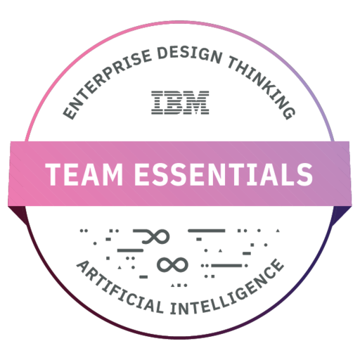

4+ years keeping enterprise
systems up and running.
I work on the operations side of technology — IT Support and Systems Engineering. That means diagnosing hardware, software and application issues, keeping enterprise systems available, and following ITIL-aligned processes so incidents get resolved consistently and documented properly.
At Search Advance Technology, I supported 100+ users across Windows and network environments, implemented ITSM frameworks that improved system reliability by 20% and cut incident resolution time by 10%, and wrote the process documentation the support team still uses today.
More recently, at Modernmark Development, I worked inside a globally distributed support team — diagnosing software bugs, reviewing code with Git and GitHub, and liaising across time zones to resolve production issues.
I hold a BSc (Hons) in IT — Software Engineering, along with ITIL 4 Foundation and IBM Cybersecurity Fundamentals certifications. I'm currently based in Colombo, Sri Lanka and looking for an IT Support / Systems Engineer role in Dubai, available immediately.
Full CV / Résumé
IT Support, Systems Engineering & service management experience — full details.
Skills
IT Service Management
Systems & Security
Databases & Web
Tools & Certifications
Verified credentials
ITIL 4 Foundation — Foundations of ITIL 4 for Service Management
IBM Cybersecurity Fundamentals
Quality Assurance (QA) — Techniques and Methodologies
Diploma in Risk Management
Assured Diploma in Information Technology (DITEC)
Course badges and completions along the way.

Where I've worked
IT Support Engineer
2024 – 2025- Diagnosed and resolved complex software bugs and system anomalies across web applications, improving application reliability by ~15% through structured analysis.
- Collaborated within a globally distributed support/IT team, using Git and GitHub for version control and taking part in code reviews to maintain code quality standards.
- Liaised with cross-functional teams across time zones to prioritise and resolve production issues, keeping technical documentation clear throughout.
IT Systems & Operations Specialist
2021 – 2022- Managed and maintained enterprise IT systems supporting 100+ users across Windows and network environments, ensuring high availability, security and regulatory compliance.
- Implemented ITSM (ITIL-aligned) frameworks covering incident, problem and change management, improving system reliability by 20% and cutting average incident resolution time by 10%.
- Authored detailed IT process, configuration and troubleshooting documentation, reducing knowledge-transfer time for new hires by 25%.
- Administered MySQL databases and WordPress-based sites, including routine backups, security updates and basic SEO optimisation.
UI/UX Designer
2019 – 2020- Designed user-facing wireframes, mockups and prototypes for web and e-commerce platforms, including Shopify store layouts and storefront customisation.
- Applied attention to detail and user-centred design principles that were later carried into systems documentation and end-user support work.
Background
BSc (Hons), Software Engineering
ESU, Colombo, Sri Lanka — 2026
Higher Diploma in IT, Software Engineering
Pearson University — 2018
Assured Diploma in IT (DITEC)
ESOFT Metro Campus, Pearson Assured — Nov 2021